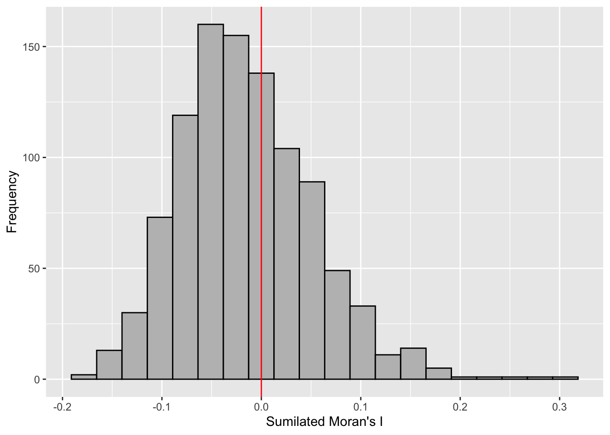
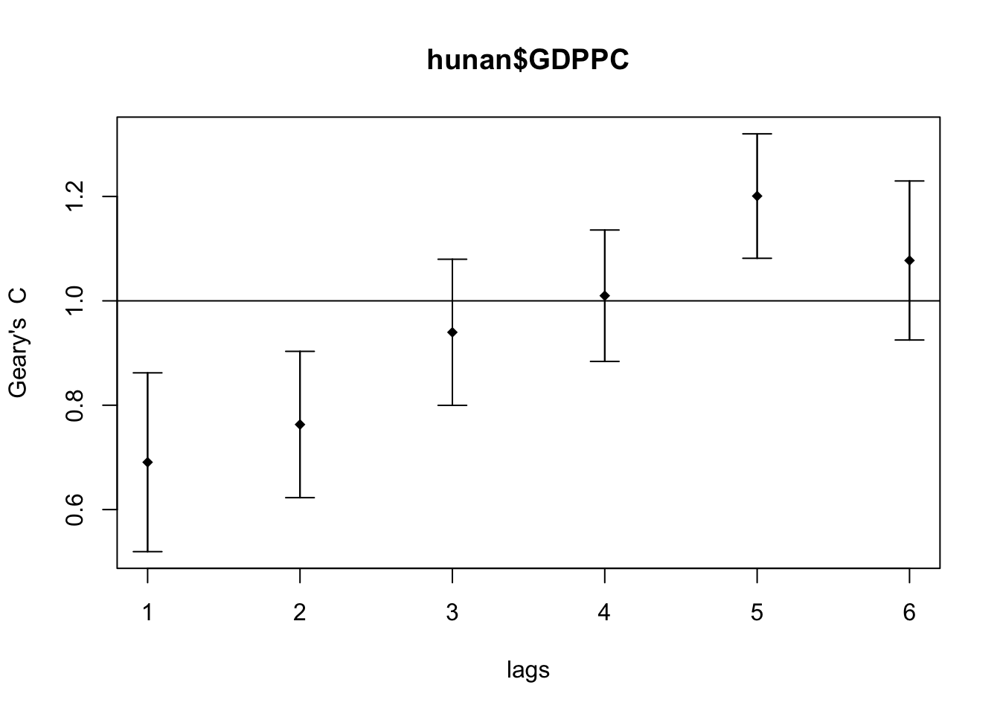

pacman::p_load(sf, spdep, tmap, tidyverse)Hands-on Exercise 2B: Global Measures of Spatial Autocorrelation
Overview
This hands-on exercise covers Chapter 9: Global Measures of Spatial Autocorrelation
I learned about the following:
- Spatial correlation using Moran’s I and Geary’s C
- Correlograms
Preparing the data sets
Data sets used on this exercise were downloaded from E-learn.
Geospatial
- Hunan county boundary layer (
shpformat)
Aspatial
- Hunan’s local development indicators in 2012 (
csvformat)
Next, is putting them under the Hands-on_Ex2 directory, with the following file structure:
Hands-on_Ex2
└── data
├── aspatial
│ └── Hunan_2012.csv
└── geospatial
├── Hunan.dbf
├── Hunan.prj
├── Hunan.qpj
├── Hunan.shp
└── Hunan.shxInstalling R packages
I used the code below to install the R packages used in the exercise:
Getting the Data Into R Environment
Importing data sets
I used st_read() to import the geospatial shp data.
hunan <- st_read(dsn = "data/geospatial",
layer = "Hunan")Reading layer `Hunan' from data source
`/Users/kjcpaas/Documents/Grad School/ISSS624/Project/ISSS624/Hands-on_Ex2/data/geospatial'
using driver `ESRI Shapefile'
Simple feature collection with 88 features and 7 fields
Geometry type: POLYGON
Dimension: XY
Bounding box: xmin: 108.7831 ymin: 24.6342 xmax: 114.2544 ymax: 30.12812
Geodetic CRS: WGS 84
Note
In the previous exercises, we transformed the data with EPSG:3414. However, that is not applicable for this data set as we are not working with Singapore 🇸🇬 data set.
As with the previous exercises, I used read_csv() to import aspatial csv data.
hunan2012 <- read_csv("data/aspatial/Hunan_2012.csv")Joining the data sets
In the exercise, we have to join the 2 data sets using this code:
hunan <- left_join(hunan, hunan2012)%>%
select(1:4, 7, 15)
Note
We did not specify any columns to join by but left_join detected common column, County, so it joined the 2 data sets by this column.
At the end of this, we are left with 7 columns, which includes GDPPC from the aspatial data, which contains data for Gross Domestic Product per Capita.
Visualizing Regional Development Indicator
Next, I plotted the GDPPC maps using equal interval classification and equal quantile classification.
equal <- tm_shape(hunan) +
tm_fill("GDPPC",
n = 5,
style = "equal") +
tm_borders(alpha = 0.5) +
tm_layout(main.title = "Equal interval classification")
quantile <- tm_shape(hunan) +
tm_fill("GDPPC",
n = 5,
style = "quantile") +
tm_borders(alpha = 0.5) +
tm_layout(main.title = "Equal quantile classification")
tmap_arrange(equal,
quantile,
asp=1,
ncol=2)
Global Spatial Autocorrelation
Computing Contiguity Spatial Weights
First, I built the neighbor list using Queen contiguity-based neighbors. This means the regions must share a border (minimum a point) to be considered neighbors.
wm_q <- poly2nb(hunan,
queen=TRUE)
summary(wm_q)Neighbour list object:
Number of regions: 88
Number of nonzero links: 448
Percentage nonzero weights: 5.785124
Average number of links: 5.090909
Link number distribution:
1 2 3 4 5 6 7 8 9 11
2 2 12 16 24 14 11 4 2 1
2 least connected regions:
30 65 with 1 link
1 most connected region:
85 with 11 linksRow-standardized weights matrix
Next, I assigned weights to each neighboring county with value 1/(# of neighbors). This could be done by using style="W" to nb2listw().
rswm_q <- nb2listw(wm_q,
style="W",
zero.policy = TRUE)
rswm_qCharacteristics of weights list object:
Neighbour list object:
Number of regions: 88
Number of nonzero links: 448
Percentage nonzero weights: 5.785124
Average number of links: 5.090909
Weights style: W
Weights constants summary:
n nn S0 S1 S2
W 88 7744 88 37.86334 365.9147Global Spatial Autocorrelation: Moran’s I
Moran’s I test
Next, I used Moran’s I statistical testing using moran.test().
moran.test(hunan$GDPPC,
listw=rswm_q,
zero.policy = TRUE,
na.action=na.omit)
Moran I test under randomisation
data: hunan$GDPPC
weights: rswm_q
Moran I statistic standard deviate = 4.7351, p-value = 1.095e-06
alternative hypothesis: greater
sample estimates:
Moran I statistic Expectation Variance
0.300749970 -0.011494253 0.004348351
Tip
The Moran’s I value is 0.30075, which is greater than 0. This means that observations are clustered, and tend to be similar.
The p-value is also very close to 0, which indicates high confidence on the correlation.
Computing Monte Carlo Moran’s I
Next, a Monte Carlo simulation was performed for the Moran’s I statistic. 1000 simulations were performed by the code below:
set.seed(1234)
bperm = moran.mc(hunan$GDPPC,
listw=rswm_q,
nsim=999,
zero.policy = TRUE,
na.action=na.omit)
bperm
Monte-Carlo simulation of Moran I
data: hunan$GDPPC
weights: rswm_q
number of simulations + 1: 1000
statistic = 0.30075, observed rank = 1000, p-value = 0.001
alternative hypothesis: greater
Tip
The Moran’s I value is 0.30075, same result as that of the Moran’s I test. Similarly, it means that observations are clustered, and tend to be similar.
The p-value is also very close to 0, which indicates high confidence on the correlation.
Visualizing Monte Carlo Moran’s I
First, I examined the statistics of the Monte Carlo Moran’s I. I checked the mean, variance, and the quantiles.
mean(bperm$res[1:999])[1] -0.01504572var(bperm$res[1:999])[1] 0.004371574summary(bperm$res[1:999]) Min. 1st Qu. Median Mean 3rd Qu. Max.
-0.18339 -0.06168 -0.02125 -0.01505 0.02611 0.27593 Next, I also plotted the histogram.
Important
I plotted using ggplot2 as an additional challenge from the exercise.
mc_results_df <- data.frame(moran_i = bperm$res)
ggplot(mc_results_df, aes(x = moran_i)) +
geom_histogram(bins = 20, fill = "grey", color = "black") +
geom_vline(xintercept = 0, color = "red") +
labs(x = "Sumilated Moran's I",
y = "Frequency")
Note
From this Monte Carlo simulations, results are skewed to the left, meaning most of the Moran’s I simulations result in negative values. It means that in most simulation results, there is dispersion so there is no spatial correlation.
This is quite contradictory to the statistic from moran.test.
However, as this is a simulation set using seed 1234, results could be different in other simulations because the sampling is different.
Global Spatial Autocorrelation: Geary’s
Next I used Geary’s method for spatial correlation.
Geary’s C test
geary.test(hunan$GDPPC, listw=rswm_q)
Geary C test under randomisation
data: hunan$GDPPC
weights: rswm_q
Geary C statistic standard deviate = 3.6108, p-value = 0.0001526
alternative hypothesis: Expectation greater than statistic
sample estimates:
Geary C statistic Expectation Variance
0.6907223 1.0000000 0.0073364
Tip
Geary’s C statistic is 0.6907, which is less than 1. This means that observations are clustered, and tend to be similar. P-value is also very close to 0, suggesting high-confidence.
It is consistent with the conclusions in Moran’s I test.
Computing Monte Carlo Geary’s C
Similarly, I did permutation test via Monte Carlo simulations.
set.seed(1234)
bperm=geary.mc(hunan$GDPPC,
listw=rswm_q,
nsim=999)
bperm
Monte-Carlo simulation of Geary C
data: hunan$GDPPC
weights: rswm_q
number of simulations + 1: 1000
statistic = 0.69072, observed rank = 1, p-value = 0.001
alternative hypothesis: greater
Tip
The Moran’s I value is 0.6907, same result as that of the Geary’s C test. Similarly, it means that observations are clustered, and tend to be similar.
The p-value is also very close to 0, which indicates high confidence on the correlation.
Visualizing Monte Carlo Geary’s C
First, I examined the statistics of the Monte Carlo Geary’s C. I checked the mean, variance, and the quantiles.
mean(bperm$res[1:999])[1] 1.004402var(bperm$res[1:999])[1] 0.007436493summary(bperm$res[1:999]) Min. 1st Qu. Median Mean 3rd Qu. Max.
0.7142 0.9502 1.0052 1.0044 1.0595 1.2722 Finally, visualizing it.
hist(bperm$res, freq=TRUE, breaks=20, xlab="Simulated Geary c")
abline(v=1, col="red")
Note
From this Monte Carlo simulations, results are quite balanced on 1, which makes it inconclusive as to the spatial clustering and dispersion.
This is quite contrary to the statistic resulting from geary.test(), which was more conclusive.
However, as this is a simulation set using seed 1234, results could be different in other simulations because the sampling is different.
Spatial Correlograms
Next, was to generate correlograms to look at patterns from a different perspective. This is done via st.correlogram().
Compute Moran’s I correlogram
First, I generated the correlogram for Morans’s I.
MI_corr <- sp.correlogram(wm_q,
hunan$GDPPC,
order=6,
method="I",
style="W")
plot(MI_corr)
This did not provide me much information and I didn’t know how to interpret it so I printed the full result.
print(MI_corr)Spatial correlogram for hunan$GDPPC
method: Moran's I
estimate expectation variance standard deviate Pr(I) two sided
1 (88) 0.3007500 -0.0114943 0.0043484 4.7351 2.189e-06 ***
2 (88) 0.2060084 -0.0114943 0.0020962 4.7505 2.029e-06 ***
3 (88) 0.0668273 -0.0114943 0.0014602 2.0496 0.040400 *
4 (88) 0.0299470 -0.0114943 0.0011717 1.2107 0.226015
5 (88) -0.1530471 -0.0114943 0.0012440 -4.0134 5.984e-05 ***
6 (88) -0.1187070 -0.0114943 0.0016791 -2.6164 0.008886 **
---
Signif. codes: 0 '***' 0.001 '**' 0.01 '*' 0.05 '.' 0.1 ' ' 1
Tip
From my understanding, since Moran’s I values are greater than 0 and highest on lag 1, it means that the spatial correlation is most significant the closer the regions are.
Compute Geary’s C correlogram
Next, I generated the correlogram for Geary’s C.
GC_corr <- sp.correlogram(wm_q,
hunan$GDPPC,
order=6,
method="C",
style="W")
plot(GC_corr)
Next was to print the results.
print(GC_corr)Spatial correlogram for hunan$GDPPC
method: Geary's C
estimate expectation variance standard deviate Pr(I) two sided
1 (88) 0.6907223 1.0000000 0.0073364 -3.6108 0.0003052 ***
2 (88) 0.7630197 1.0000000 0.0049126 -3.3811 0.0007220 ***
3 (88) 0.9397299 1.0000000 0.0049005 -0.8610 0.3892612
4 (88) 1.0098462 1.0000000 0.0039631 0.1564 0.8757128
5 (88) 1.2008204 1.0000000 0.0035568 3.3673 0.0007592 ***
6 (88) 1.0773386 1.0000000 0.0058042 1.0151 0.3100407
---
Signif. codes: 0 '***' 0.001 '**' 0.01 '*' 0.05 '.' 0.1 ' ' 1
Tip
The Geary’s C values are closest to 0 on the lag distance 1. Similar to Compute Moran’s I correlogram, the spatial correlation is strongest the closer the regions are.
The pattern is inverse of the Moran’s I correlogram, which makes sense as Moran’s I and Geary’s C trends are inverse of each other.
Reflections
It took me a while to understand the implications of the Monte Carlo simulations with Moran’s I and Geary’s C. I spent a much longer time than expected on this shorter chapter.
Moran’s I and Geary’s C are inverse of each other and the patterns shown in this exercise look consistent. I wonder if it is worth knowing both or knowing just one is enough since they are for the same purpose.